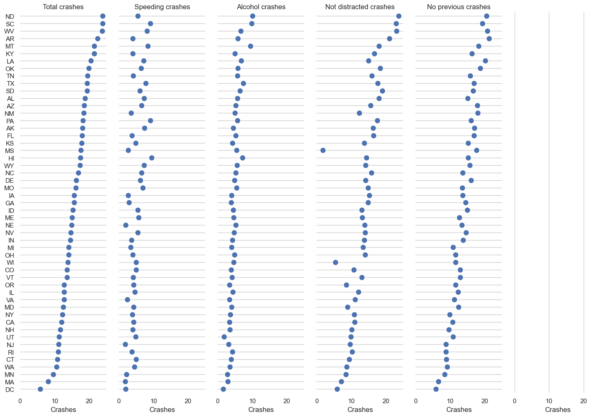
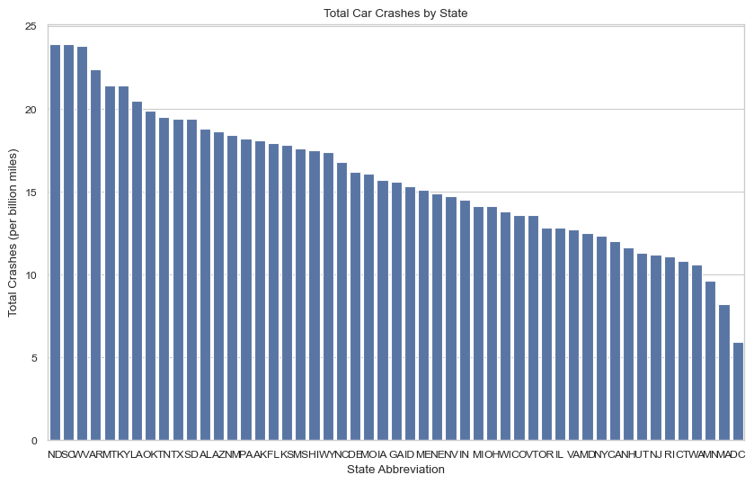

total speeding alcohol not_distracted no_previous ins_premium \
0 18.8 7.332 5.640 18.048 15.040 784.55
1 18.1 7.421 4.525 16.290 17.014 1053.48
2 18.6 6.510 5.208 15.624 17.856 899.47
3 22.4 4.032 5.824 21.056 21.280 827.34
4 12.0 4.200 3.360 10.920 10.680 878.41
ins_losses abbrev
0 145.08 AL
1 133.93 AK
2 110.35 AZ
3 142.39 AR
4 165.63 CA CANH TRAN Notebook - Project 06.
Author: Ken McTran
Repository: https://github.com/ctranimal/datafun-06-eda
Purpose: To practice with Markdown cells, Jupyter, pandas, Seaborn and other popular tools for data analytics. I utilized Quarto as a tool to convert Jupyter notebook into more readable/presentable products.
Date: Most recently updated: 8/07/25.
Section 0. Setting-Up: Import external packages
The purpose of this section is to import external packages that I will need to execute python code subsequently
Section 1. Step-1: Data Acquisition
1. Load the car_crashes dataset into pandas DataFrame. For this project, we use pre-made data called car_crashes so that we can go ahead and practice with pandas DataFrame (as opposed to loading data from the internet via reading excel or csv or JSON data etc …)
Section 2. Step-2: Initial Data Inspection
Display the first 10 rows of the DataFrame, display the data types of each column using df.head(10), df.shape and df.dtypes
total speeding alcohol not_distracted no_previous ins_premium \
0 18.8 7.332 5.640 18.048 15.040 784.55
1 18.1 7.421 4.525 16.290 17.014 1053.48
2 18.6 6.510 5.208 15.624 17.856 899.47
3 22.4 4.032 5.824 21.056 21.280 827.34
4 12.0 4.200 3.360 10.920 10.680 878.41
5 13.6 5.032 3.808 10.744 12.920 835.50
6 10.8 4.968 3.888 9.396 8.856 1068.73
7 16.2 6.156 4.860 14.094 16.038 1137.87
8 5.9 2.006 1.593 5.900 5.900 1273.89
9 17.9 3.759 5.191 16.468 16.826 1160.13
ins_losses abbrev
0 145.08 AL
1 133.93 AK
2 110.35 AZ
3 142.39 AR
4 165.63 CA
5 139.91 CO
6 167.02 CT
7 151.48 DE
8 136.05 DC
9 144.18 FL
(51, 8)
total float64
speeding float64
alcohol float64
not_distracted float64
no_previous float64
ins_premium float64
ins_losses float64
abbrev object
dtype: objectSection 3. Step-3: Initial Descriptive Statistics
Use the DataFrame describe() method to display summary statistics for each column
total speeding alcohol not_distracted no_previous \
count 51.000000 51.000000 51.000000 51.000000 51.000000
mean 15.790196 4.998196 4.886784 13.573176 14.004882
std 4.122002 2.017747 1.729133 4.508977 3.764672
min 5.900000 1.792000 1.593000 1.760000 5.900000
25% 12.750000 3.766500 3.894000 10.478000 11.348000
50% 15.600000 4.608000 4.554000 13.857000 13.775000
75% 18.500000 6.439000 5.604000 16.140000 16.755000
max 23.900000 9.450000 10.038000 23.661000 21.280000
ins_premium ins_losses
count 51.000000 51.000000
mean 886.957647 134.493137
std 178.296285 24.835922
min 641.960000 82.750000
25% 768.430000 114.645000
50% 858.970000 136.050000
75% 1007.945000 151.870000
max 1301.520000 194.780000 Observations:
- The information displayed above had descriptive statistics for each of the columns: the mean, standard deviations, min/max, 25 percentile, 50 percentile, and 75 percentile.
- Look at standard deviation for insurance premium and insurance losses. The std for ins_losses is about 25 whereas std for ins_premium is 178. Thus, std for ins_premium is about 7 times larger than that for ins_losses.
- If I start an insurance company, I would open office at states where the std for ins_premium is the largest, because then I would make the most profit.
Section 4. Step-4: Initial Data Distribution for Numerical Columns
Section 6. Step-6: Initial Data Transformation and Feature Engineering
Re-naming at least one column
| total_per_billion_miles | speeding | alcohol | not_distracted | no_previous | ins_premium | ins_losses | abbrev | |
|---|---|---|---|---|---|---|---|---|
| 0 | 18.8 | 7.332 | 5.640 | 18.048 | 15.040 | 784.55 | 145.08 | AL |
| 1 | 18.1 | 7.421 | 4.525 | 16.290 | 17.014 | 1053.48 | 133.93 | AK |
| 2 | 18.6 | 6.510 | 5.208 | 15.624 | 17.856 | 899.47 | 110.35 | AZ |
| 3 | 22.4 | 4.032 | 5.824 | 21.056 | 21.280 | 827.34 | 142.39 | AR |
| 4 | 12.0 | 4.200 | 3.360 | 10.920 | 10.680 | 878.41 | 165.63 | CA |
Observations: Successfully changed the “total” column heading to “total per billion miles” to clearly indicating the data.
Now, display via df.head()
| total | speeding | alcohol | not_distracted | no_previous | ins_premium | ins_losses | abbrev | ins_profit | |
|---|---|---|---|---|---|---|---|---|---|
| 0 | 18.8 | 7.332 | 5.640 | 18.048 | 15.040 | 784.55 | 145.08 | AL | 639.47 |
| 1 | 18.1 | 7.421 | 4.525 | 16.290 | 17.014 | 1053.48 | 133.93 | AK | 919.55 |
| 2 | 18.6 | 6.510 | 5.208 | 15.624 | 17.856 | 899.47 | 110.35 | AZ | 789.12 |
| 3 | 22.4 | 4.032 | 5.824 | 21.056 | 21.280 | 827.34 | 142.39 | AR | 684.95 |
| 4 | 12.0 | 4.200 | 3.360 | 10.920 | 10.680 | 878.41 | 165.63 | CA | 712.78 |
Section 7. Step-7: Initial Visualization
In this section, I’ll present 3 stories with goals/chart-types that backup the story-lines and observations.
Section 7-1:
- Goal: Displaying 5 categories of info relating to crashes against the state abbreviation (on y-axis)
- Chart-Type: PairGrid charts.
- Chart: See chart below
- Story: As displayed in charts below, 5 categories of crashes info: total crashes, speeding crashes, alcohol crashes, not distracted crashes, no previous crashes were mapped against the 50 state abbreviations. Some outlier datapoints, visible on the chart below, told the stories:
- Utah: had lowest alcohol crashes. It may have something to do with Utah being mostly a “dry state” regarding alcohol.
- Wisconsin and Mississippi State: Had lowest “Not distracted crashes”, meaning, they had the highest “distracted driving crashes” – these states should focus more public awareness campaigns to fight against “distracted driving.”

Section 7-2:
- Goal: Display alcohol related crashes against total crashes for each state
- Chart-Type: Barplot charts
- Chart: See below
- Story: As displayed in the Barplot charts below: With state abbreviations on the y-axis, and each horizontal bar (with dark-blue portion representing alcohol related crashes) displaying total-crashes. Observations:
- Utah: Had the lowest alcohol-related crashes – may have something to do with it being a “dry-state” regarding alcohol.
- The 8 states with the highest number of crashes (per billion miles driven) and highest alcohol related crashes: South Carolina, North Dakota, West Virginia, Arkansas, Kentucky, Montana, Lousiana and Oklohama
- Surprisingly, the states with lowest number of crashes and alcohol related creashes were: Washington state, Minnesota state, Massachusetts. Why? These are all geographically large states bordering Canada. Possibly some (positive) influence from our northern neighbor, perhaps?

Section 7-3:
- Goal: Comparing total crashes between all 50 states.
- Chart-Type: Barplot charts.
- Chart: See below.
- Story: Similar to 2 previous graphs in section 7-1 and 7-2, 3 states with highest total crashes (per billion miles driven) were: South Carolina, North Dakota and West Virginia. Federal fundings promoting car crashes prevention should be devoted to these 3 states will result in biggest impact in crashes reduction.

Section 8. Initial Storytelling and Presentation.
I researched various options on how to present my stories in ipynb notebook. Google suggested Quarto. After watching some youtube vidoes about Quarto, I decided to utilize it. Note that the story-telling and presentation are sprinkled throughout as Observations (in Markdown format).
Instructions on how to use quarto:
- Follow instructions on https://quarto.org to install quarto.
- For VS Code, install Quarto extension by searching (and install) “Quarto” published by “Quarto”
- On Macbook terminal windows, issue command `quarto render tran_eda_report_version_2.ipynb’ – resulted in a tran_eda_report_version_2.html file created.